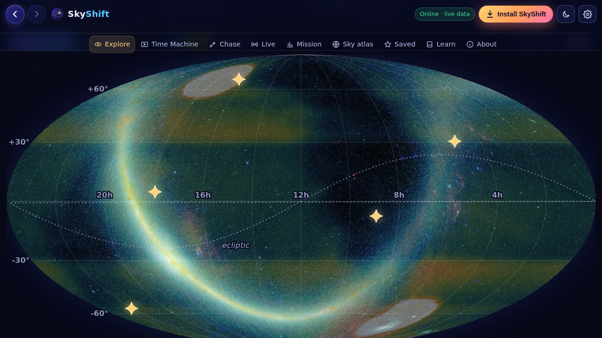
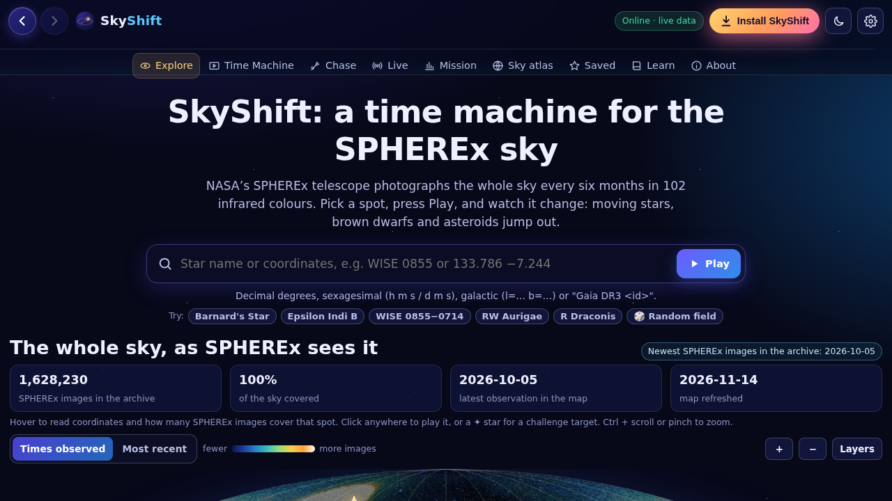
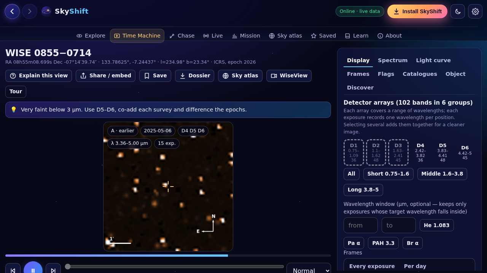
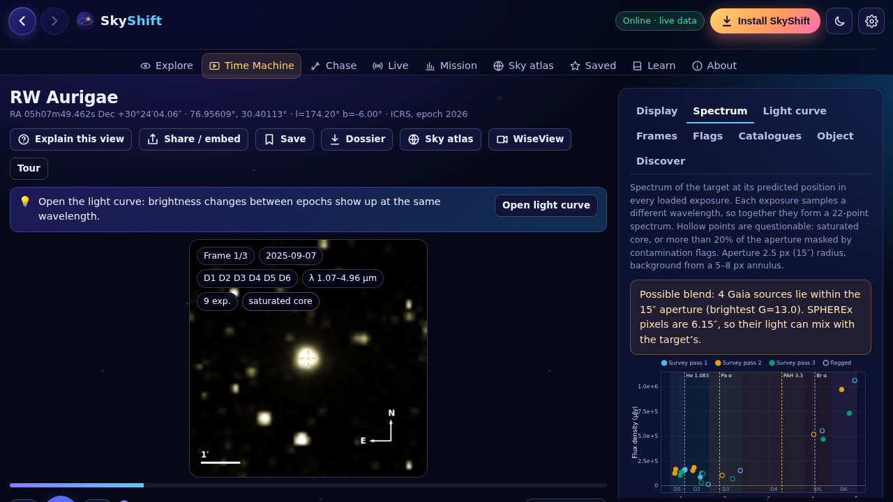
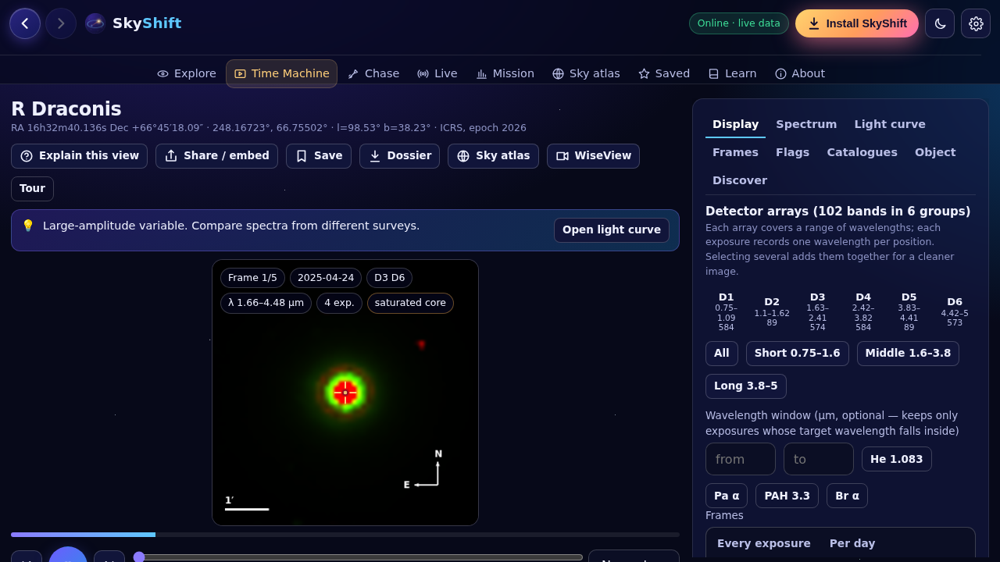

2026 NASA Space Apps Challenge · Planet X and SPHEREx
SkyShift: a time machine for the SPHEREx sky
Type a star or coordinates, press Play, and watch NASA SPHEREx infrared images of that patch of sky play like a film.
Team SkyShift Cyprus

The problem
- SPHEREx maps the entire sky every six months in 102 infrared bands: over 1.6 million spectral images so far.
- Brown dwarfs, asteroids, comets and nearby stars reveal themselves by moving; variable stars by changing brightness.
- No one person, and no single program, can look at all of it.
- Volunteers found most known brown dwarfs and comets by blinking images, the way Pluto was found. They need a tool for SPHEREx.
Our solution
- Explore a real SPHEREx map of the whole sky; hover to see how often each spot was imaged; click to play it.
- Time Machine: every SPHEREx image of that spot, aligned on the sky, as a Movie, Blink, Difference, Stack, false Colour or your own equation.
- Gaia and WISE overlays, contamination flags, shareable/embeddable links, saved fields, candidates and a reproducible dossier.
- Installs on any phone or computer and works offline.

Live demo: WISE 0855 and RW Aurigae


30-second video: skyshift-demo.webm (same folder).

Using all 102 bands
- Per-detector co-adds: each of the 6 arrays averaged separately, then combined, for clean deep images.
- False colour: blue 0.75–1.6 µm, green 1.6–3.8 µm, red 3.8–5 µm; cold brown dwarfs glow red.
- Spectra and light curves on the fly for any clicked object, with hydrogen and PAH lines marked.
- Wavelength-matched differences and image equations such as
mean(D5,D6) − epoch(1).
Validation
4×10⁻¹⁰″
largest position difference vs Astropy on real SPHEREx files10⁻¹⁵ µm
largest wavelength difference vs Astropy (WCS-WAVE table)9×
less data per image with column-precise byte ranges (identical pixels)8 / 8
challenge resources used and checked live| Target | Proper motion: SkyShift vs Gaia DR3 (parallax removed) | Verdict |
|---|---|---|
| Barnard’s Star | μδ 10,139 vs 10,362 mas/yr (2.2%) | agrees (1σ); saturated core |
| RW Aurigae | residual 386 ± 433, −20 ± 433 | agrees |
| Epsilon Indi B | residual −1,229 ± 512, −1,381 ± 486 | ≈2.5σ: direction right |
| R Draconis | 2 epochs, saturated | not reliable |
| WISE 0855 | too faint at 0.75–5 µm | no reliable motion |
RW Aurigae brightness changed −13.5% ± 5.3% between surveys (2.5σ, below the 3σ candidate threshold). Full report: docs/VALIDATION.md.
Impact
- Anyone with a phone can inspect SPHEREx data minutes after it reaches the archive, with no account and no software to install.
- Discovery helpers flag candidates for human checking; finds are saved with full provenance and exportable (CSV, JSON, MPC ADES).
- Classroom activities built on the five challenge targets.
What's next
- Public hosting on two independent hosts with scheduled data refresh.
- Forced photometry for blended sources; parallax fits from SPHEREx alone.
- More languages (Greek interface already started) and shared crowd classification.